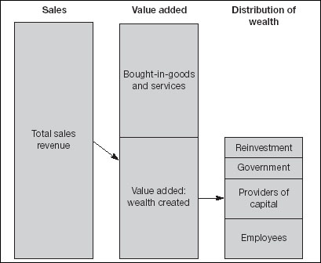

Another financial presentation worth considering is the value added statement. This is another way of looking at corporate performance. The value added statement attempts to measure the creation and distribution of wealth. Personally, I am a bit dubious about how wealth is created by, say, marking up the price of groceries before retailing them – but there you are. Economists rely on the concept of value added to measure activity. Consequently, the corporate value added statement is directly related to national income figures (such as GDP).

Value added statements are not an officially required component of financial reporting. Indeed, more often than not they are absent from published reports. Moreover, you cannot usually construct a value added statement without knowing the breakdown of costs and other figures at a level of detail which is not often found in published financials. Nevertheless, if the financials that you are examining do include a value added statement, or you have constructed one from your own accounts, you may find it useful.
Figure 17.2 shows an example. As you can see, there is not really any new information in the individual components, only in the presentation. Note that it shows how the wealth that has been created is shared out among employees, social welfare (i.e. via taxation), and the providers of capital (in plain English, bankers and shareholders) – and how much is reinvested for future growth.
However, you can derive some useful information by calculating various ratios (Fig. 17.2, right-hand column). For example, the number at top-right indicates that for every dollar of sales, 43 cents (i.e. 43%) is value added by the company. The higher the number, the greater degree of vertical integration, or, to put it another way, the more the company produces for itself rather than buying-in from outside. You will also note that for every dollar of salaries, $2.30 of value is created. Another way of looking at this is to divide value added by the number of employees to reveal the average value added per employee. Imagine how much this figure would increase if all the deadweight in your organization was thrown overboard. Did anybody mention the accounting department?